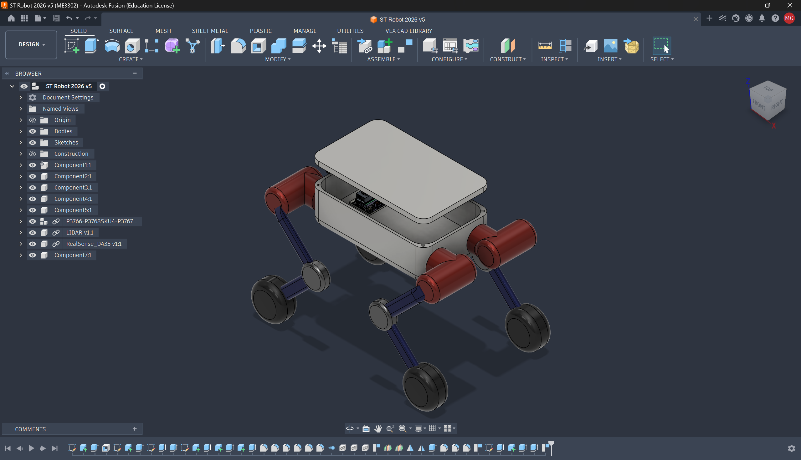
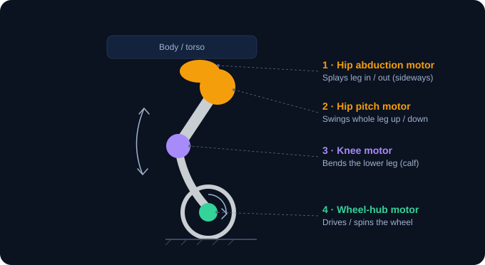
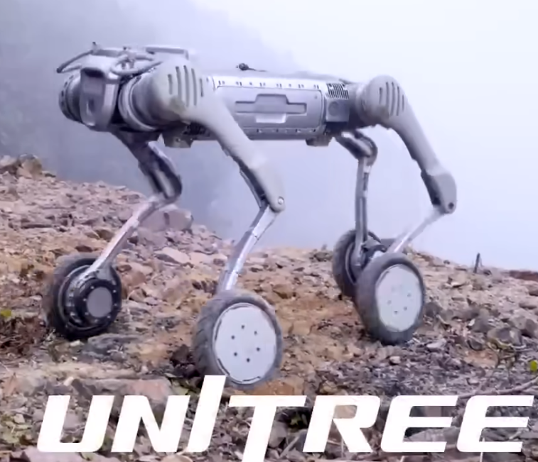

دُر حول المجسّم، حرّك المفاصل، وبدّل الأوضاع (وقوف/انبطاح/جلوس).
افتح العارض ↗رجل واحدة — اعزل كل محرّك (الورك/الركبة/العجلة) وشاهد كيف يحرّك مفصله.
افتح الشرح ↗كيف يتدحرج، يمشي، يقف، ويتسلّق — أنماط الحركة الكاملة للروبوت.
افتح الشرح ↗
